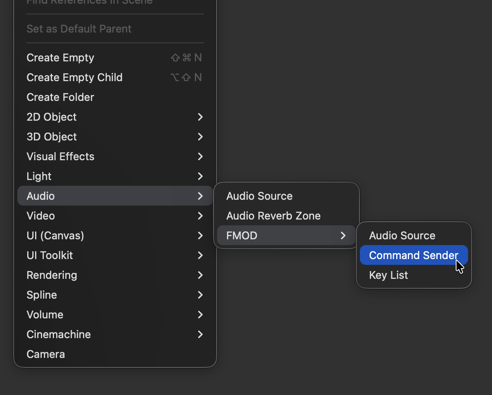
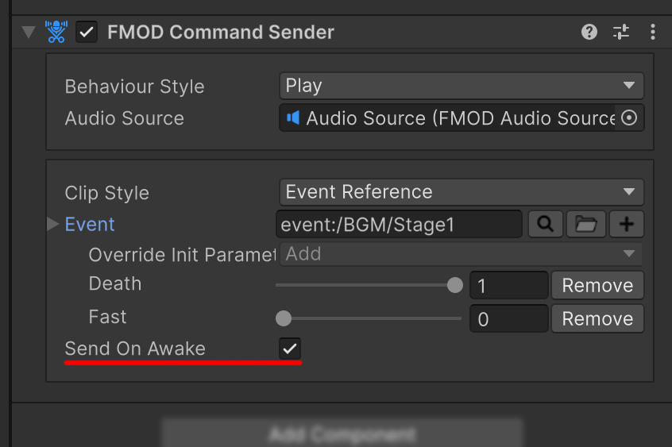
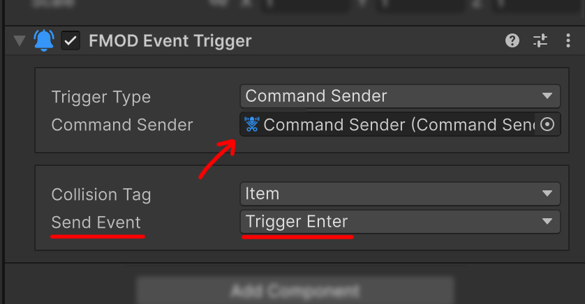

Command Sender
CommandSender forwards an Inspector-configured command to an FMODAudioSource or the FMOD Studio System. A UnityEvent or FMODEventTrigger can always call the same SendCommand() method while the Sender selects playback, stopping, key-off, Local Parameter, or Global Parameter behavior.
Create a Command Sender
Add a CommandSender in either of the following ways:
- Select GameObject > Audio > FMOD > Command Sender.
- On an existing GameObject, select FMOD Studio > FMOD Plus > FMOD Command Sender from Add Component.

Every behavior except Global Parameter requires a target FMODAudioSource. The basic setup is to assign it directly to Audio Source.

Behaviour types
| Behaviour | Target | Action |
|---|---|---|
| Play | FMOD Audio Source | Selects an Event, applies Parameters, and starts playback. |
| Stop | FMOD Audio Source | Stops the current Event with the selected Fade option. |
| Key Off | FMOD Audio Source | Releases a sustain point on the current Event. |
| Parameter | FMOD Audio Source | Applies Local Parameters to the current Event. |
| Global Parameter | FMOD Studio System | Changes a project-wide Parameter value. |
CommandSender has no Pause or Mute behavior. Use FMODAudioSource.Pause() and mute directly for those operations.
Send On Awake
Despite its name, Send On Awake invokes SendCommand() from OnEnable, not Awake.

- The command is sent when the GameObject first becomes enabled.
- Disabling and enabling it again sends the command again.
- When a target or Key is assigned at runtime, disable this option or configure execution order so the command cannot run before the assignment is complete.
Call SendCommand directly
Code can execute the configured Behaviour and Inspector values through the single SendCommand() method.
using FMODPlus;
using UnityEngine;
public class CommandButton : MonoBehaviour
{
[SerializeField] private CommandSender commandSender;
public void Execute()
{
commandSender.SendCommand();
}
}
Connect CommandSender.SendCommand to a Unity UI Button or UI Toolkit UnityEvent. The caller remains the same even when the configured command becomes more complex.
Connect an Event Trigger
Set the FMODEventTrigger Trigger Type to Command Sender, then assign the Sender to Command Sender. The Trigger invokes SendCommand() when its configured Send Event occurs.

The Command Sender target does not use the Event Trigger Stop Event. To stop from a Trigger, create a separate Command Sender with Stop behavior and invoke it from the desired Event.
See Event Trigger for the available Event conditions.